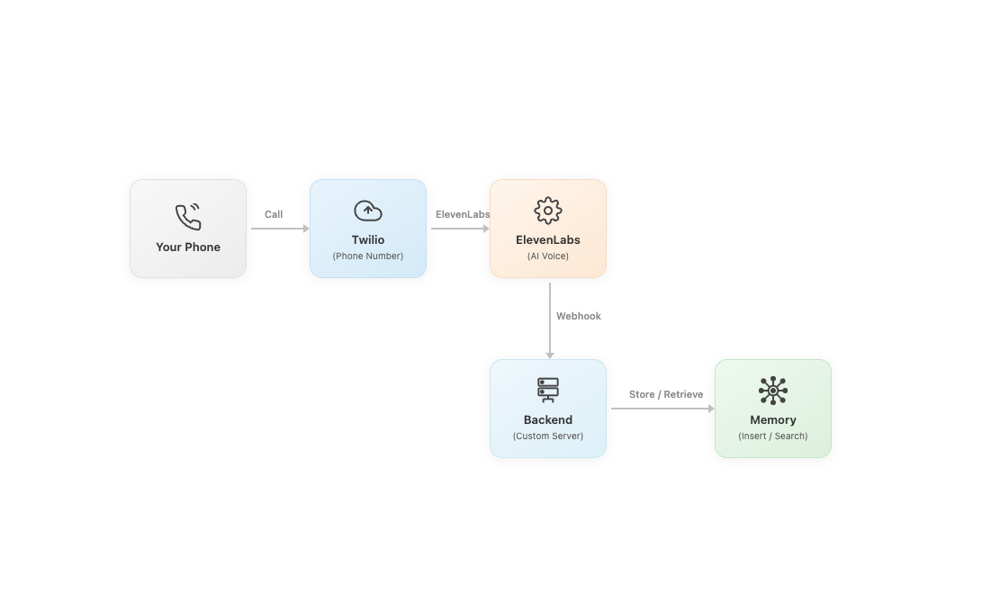

AI Voice Assistant
with Persistent Memory
A phone-based AI voice assistant that remembers context across calls , built to demonstrate how stateful conversational AI architecture works and what it means for product design when your AI can recall the previous conversation.

High call volumes and no memory between them
Support teams face a dual problem: high inbound call volumes overwhelm agents, and every call starts from zero , the system has no memory of what was discussed last time. Users repeat themselves. Agents re-verify context. Resolution takes longer than it should.
Voice AI can deflect routine calls. But stateless voice AI creates its own frustration: a caller who spoke to the AI last week has to re-explain everything. The experience feels broken, not intelligent.
The real product problem was persistence: could a voice AI system retain context across multiple phone interactions, so repeat callers feel genuinely remembered?
Voice AI without memory isn’t truly helpful
Deflection rate is the wrong metric. The right metric is: does the caller feel that the AI understood their situation, including what happened last time?
Memory changes the product experience fundamentally
An AI that remembers you across calls isn’t just more efficient , it’s qualitatively different. Trust is built across sessions, not within them.
How persistent memory actually works
The core challenge was that phone calls are stateless by nature. Each Twilio webhook is a new HTTP request with no inherent memory of prior sessions. The architecture had to explicitly solve for persistence.
“The memory architecture is the product. The voice is the interface. The two are easy to conflate, but they’re entirely separate design decisions.”
What this taught me about voice product design
Memory is the trust mechanism
In text-based AI, users can re-read responses and verify. In voice, trust is built through familiarity and recall. An AI that remembers you feels trustworthy in a qualitatively different way.
The handoff moment is the hardest design problem
When should the AI escalate to a human? Getting this wrong in voice is more costly than in chat , the caller has already invested time in a phone call. The handoff has to be warm, not abrupt.
- Webhook architecture changes everything: Phone AI isn’t a chatbot with audio. It’s a fundamentally different integration model. Every latency decision becomes audible.
- Voice UX has different constraints: No screen, no re-reading, no undo. The conversation design has to be clearer and more direct than text-based equivalents.
- Storage strategy is a product decision: What to retain, what to summarise, what to discard after N sessions , these are product choices with real user experience implications.
- Latency is felt, not seen: A 3-second response delay in chat is mildly annoying. On a phone call, it’s deeply uncomfortable. Optimising for time-to-first-token is a product requirement, not an engineering nice-to-have.